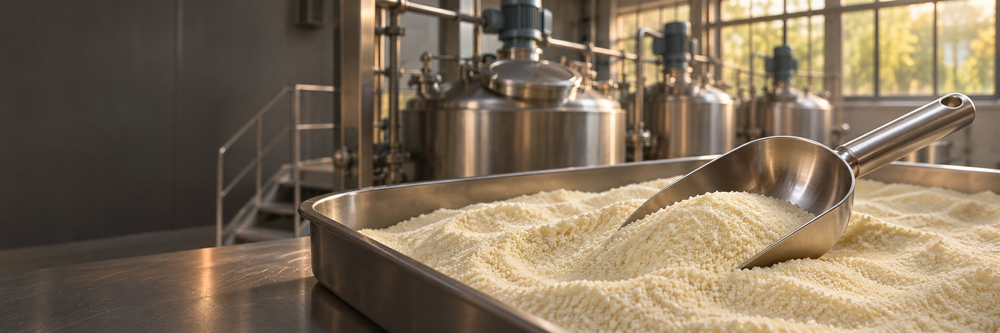
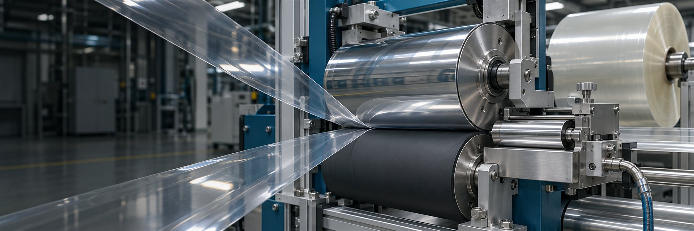

다인소재 스마트ERP 개선 2차 프로젝트 시작
1차 개선 성과를 바탕으로 구매·생산·재고·품질 프로세스를 확장합니다. 식품첨가물·원료 제조 현장의 ERP 활용도와 데이터 정합성을 높입니다.
제조 현장의 프로젝트 착수와 완료, 제품 업데이트, 회사 소식을 전합니다.

1차 개선 성과를 바탕으로 구매·생산·재고·품질 프로세스를 확장합니다. 식품첨가물·원료 제조 현장의 ERP 활용도와 데이터 정합성을 높입니다.

라미네이팅·코팅 신소재 제조기업 삼민산업(주)에 MES를 신규 도입합니다. 생산실적·공정·품질 이력을 데이터로 관리하는 운영 체계를 구축합니다.
연포장 그라비아인쇄 제조관리 ERP v2.0의 저작권 등록을 완료했습니다. 그라비아 인쇄 현장의 제조·품질·재고 운영을 지원하는 솔루션의 권리를 확보했습니다.
박스제조 및 옵셋인쇄 제조관리 ERP의 저작권 등록을 완료했습니다. 박스·옵셋 인쇄 공정의 제조관리 솔루션에 대한 권리를 확보했습니다.
다인소재 스마트ERP 개선 1차 프로젝트를 성공적으로 완료했습니다. 핵심 업무 프로세스 고도화 성과를 바탕으로 2차 개선으로 이어갑니다.
업무 프로세스 변경에 대응한 시스템 고도화 및 AS 지원을 완료했습니다. 현장 운영 안정성과 지속 지원 체계를 강화했습니다.
인천항만공사 대중소 상생형 MES 고도화 사업을 성공적으로 완료했습니다. 생산 운영 효율과 MES·업무 데이터 연계 수준을 높였습니다.
펫푸드·친환경 패키징 현장의 데이터 수집과 공정 운영을 연결하는 경기도형 스마트공장 구축을 진행합니다.
굴삭기·중장비 부품 제조 업무를 MES와 ERP로 연계하는 SI 구축을 지원합니다. 핵심 업무 흐름을 통합해 운영 기반을 고도화합니다.
다인소재 스마트ERP 개선 1차를 착수하여 핵심 업무 프로세스 고도화를 진행했습니다. 이후 2026.08 성공 완료, 2026.10 2차 개선으로 이어졌습니다.
푸드·단상자 패키징 현장의 박스MES 개선을 완료했습니다. 현장 운영 효율과 생산·재고 데이터 정확도를 향상했습니다.
스마트팩토리 인천항만공사 대중소 상생형 MES 고도화 작업을 진행했습니다. 이후 2026.06 성공 완료로 이어졌습니다.
정명하이텍에 그라비아 인쇄 특화 MES를 신규 도입했습니다. 인쇄·슬리팅·합지 공정의 생산·품질 운영을 표준화합니다.
DevExpress 24.2를 적용해 UI 성능과 그리드·리포트 기능을 개선했습니다. 고객사 MES·ERP 화면의 안정성과 사용성을 높였습니다.
스마트팩토리 공급기업 재심사 절차를 완료하고 승인을 받았습니다. 제조 현장 디지털 전환 사업을 안정적으로 수행할 기반을 유지합니다.
업무 프로세스 변경에 대응한 시스템 고도화 및 재고관리 개선을 지원했습니다. 이후 AS 지원 사업 완료로 이어졌습니다.
라벨 인쇄 업무 PI와 함께 WEB 기반 MES·일부 ERP 모듈을 구축했습니다. 옵셋·플렉소·디지털 등 다공정 라벨 현장의 데이터 기반 운영을 지원합니다.